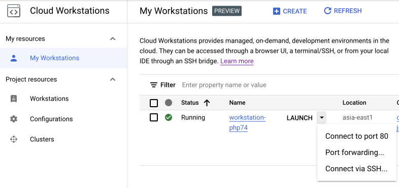

Google Cloud Workstations を使ってみる
Update: 2022-10-22
Google が Cloud Workstations というサービスをはじめました。まだ Preview です。 Docker コンテナに Web版の Code OSS などのエディタやポートフォワーディングの機能が付いています。類似のものは GitHub や AWS など他からもでているのですが、私の用途に微妙に合わないところがあって使っていませんでした。これが使えると自分のPCの性能はどうでもよくなります。複数の環境の同居の仕組みで悩む必要もなくなります。
接続元の環境
ポートフォワーディングやSSH接続を使う場合は gcloud CLI が必要なので iPad は難しいかな。でも Chromebook は問題なさそうです。一度 Linux 環境を入れてみたもののそれっきりになっていた非力な Chromebook で試してみます。
Chromebook 上の古い Debian は削除して、入れ直してみました。入れ直した結果はこんな感じで Python は入っているものがそのまま使えます。
michinobu@penguin:~$ sudo apt update
michinobu@penguin:~$ sudo apt upgrade
michinobu@penguin:~$ cat /etc/debian_version
11.5
michinobu@penguin:~$ lscpu
Architecture: x86_64
... ... ...
michinobu@penguin:~$ python3 --version
Python 3.9.2
gcloud CLI のインストール手順はこちら https://cloud.google.com/sdk/docs/install です。 インストール後、最初に以下の設定が必要になります。 gcloud CLI をインストールする前に Google Cloud のアカウントと、最初のプロジェクトの作成が必要です。
- Google Cloud のアカウントでログイン（これがないと何もできない）
- デフォルトのリージョン（地域）の選択
- asia-northeast1: 東京
- asia-northeast2: 大阪
- asia-northeast3: ソウル
- プロジェクトの選択
Windows で Python が入っていない場合はインストーラが簡単です。
Windows にインストールした後の初回の gcloud コマンド実行で「このシステムではスクリプトの実行が無効になっているため ... 」というエラーが出る場合は PowerShell を「管理者として実行」して
> Set-ExecutionPolicy RemoteSigned
を実行してください。
Workstation の作成
まず GCP のプロジェクトの支払いと Cloud Workstations API を有効にする必要があります。 支払いを有効にしたら、必ず予算も設定してください。
GCP のコンソール でプロジェクトを選択し、 メニューから Cloud Workstations を開くと、メニュー項目として
- ワークステーション
- 構成
- クラスタ
が並んでいます。下から順番に作成します。
最初にクラスタを作成します。 デフォルトは "Public cluster" で、単純な構成ならデフォルトのままで良いと思います。 Public とはいっても SSH tunnel を使うしかない環境ですので、通常の用途でしたらセキュリティはそれでだいじょうぶでしょう。 クラスタの作成には20分くらいかかります。
次に構成を作成します。 "Quick start workstations" はカネかかりそうなので無効にしました。 今回は Apache + PHP の単純な Webサイトのテスト環境にしたいだけなので、 マシンタイプは一番小さなものにしています。 エディタなどもここで選択できます。私は普段 VS Code を使っているので、デフォルトの Code OSS としました。
最後にワークステーションを作成します。名称を決めて構成を選択するだけです。
ワークステーションの一覧の中から作成したワークステーションを "Start" すると 2分40秒くらいで起動して "START" が "LAUNCH" に変わります。 "LAUNCH" をクリックすると Code OSS が表示されます。ブラウザを全画面表示にすると、デスクトップ版の VS Code とほとんど同じですね。
Code OSS でターミナルを開くとこんな感じで、普通の最小構成の Debian のようです。ユーザIDは user です。
user@workstation-test:~$ pwd
/home/user
user@workstation-test:~$ echo $SHELL
/bin/bash
user@workstation-test:~$ cat /etc/debian_version
11.5
user@workstation-test:~$ python3 --version
Python 3.10.7
user@workstation-test:~$ git --version
git version 2.30.2
"LAUNCH" の右の ▼ をクリックすると Port forwarding や SSH 接続の手順が表示されます。

HTTPサーバ等を動かす場合、ポート 80 は Code OSS のために使われているので他のポートにしてください。
user@workstation-php74:~$ curl localhost:80
<!-- Copyright (C) Microsoft Corporation. All rights reserved. -->
<!DOCTYPE html>
<html>
... ... ...
追記: 2022-11-03
作業が終わったらワークステーションを停止してください。放置していても設定した時間で止まりますが、明示的に停止すると少しでも費用を節約できます。
ワークステーションを利用する用が終わったら、ワークステーションを削除してください。停止していても最小限の費用がかかります。
追記: 2022-10-26
手元のPCから scp するときはこんなオプションが必要です。
$ scp -o "UserKnownHostsFile=/dev/null" -o "StrictHostKeyChecking=no" -P 2222 from_path user@localhost:/home/user/
Workstation を再起動するとどうも sudo apt install で入れたものが残っていないような。。。代わりに Mac で使い慣れている Homebrew を使いました。
Tag: cloud